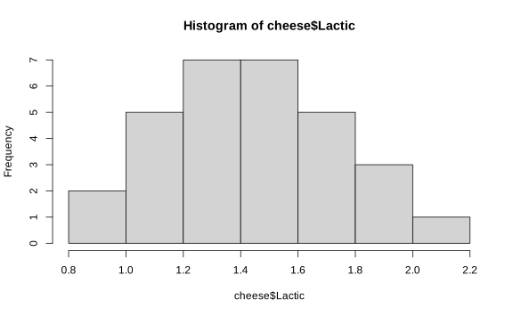
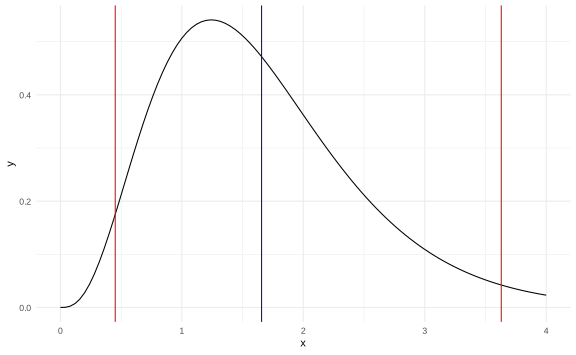

Capítulo 8 Estimación Bayesiana bajo normalidad
8.1 Precisión de una distribución normal
Definición. La precisión \(\tau\) de una normal se define como \(\tau = \dfrac 1{\sigma^2}\).
Sean \(X_1,\dots,X_n\sim N(\mu,\sigma^2) = N(\mu,\tau ^{-1})\). Su densidad corresponde a
\[\begin{align*} f(x|\mu,\sigma^2) &= \left(\dfrac 1{2\pi\sigma^2}\right)^{\frac12}\exp\bigg[-\dfrac1{2\sigma^2}(x-\mu)^2\bigg] \\ &= \left(\dfrac \tau{2\pi}\right)^{\frac12}\exp\bigg[-\dfrac\tau{2}(x-\mu)^2\bigg]=f(x|\mu,\tau). \end{align*}\]
La verosimilitud es
\[f_n(x|\mu,\tau) = \left(\dfrac\tau{2\pi}\right)^{\frac n2}\exp\bigg[-\dfrac\tau2\sum_{i=1}^2(x_i-\mu)^2 \bigg].\]
La previa de la densidad conjunta es \([\mu,\tau]\propto [\mu|\tau]\cdot [\tau]\) y la posterior \([\mu,\tau|x] \propto [\mu|\tau,x]\cdot[\tau|x]\).
Las previas por seleccionar son \([\mu|\tau]\sim \text{Normal}\) y \([\tau]\sim\text{Gamma}\).
Recuerde: La distribución Gamma tiene forma
\[\begin{equation*}f(x \mid \alpha, \beta)=\left\{\begin{array}{ll} \frac{\beta^{\alpha}}{\Gamma(\alpha)} x^{\alpha-1} e^{-\beta x} & \text { for } x>0 \\ 0 & \text { for } x \leq 0 \end{array}\right.\end{equation*}\]
Y la verosimilitud es
\[\begin{equation*} f_n(x \mid \alpha, \beta)=\left\{\begin{array}{ll} \displaystyle \frac{\beta^{n\alpha}}{\Gamma(\alpha)^n} \left(\prod_{i=1}^n x_i\right) ^{\alpha-1} e^{-\beta \sum_{i=1}^n x_i} & \text { for } x>0 \\ 0 & \text { for } x \leq 0 \end{array}\right.\end{equation*}\]
Teorema. Si \(X_1,\dots,X_n \overset{i.i.d}{\sim} N(\mu,\tau ^{-1})\), \(\mu \in \mathbb R\), \(\tau>0\) (precisión) y \(\mu\sim N(\mu_0,\lambda_0\tau)\), \(\mu\in\mathbb R\), \(\lambda_0>0\), \(\tau\sim\Gamma(\alpha_0,\beta_0)\), \(\alpha_0,\beta_0>0\).
Entonces \[[\mu,\tau|x] \propto [\mu|\tau,x]\cdot[\tau|x]\] donde \([\mu|\tau,x] \sim N(\mu_1,\lambda_1\tau)\) con
\[\lambda_1 = \lambda_0+n, \quad \mu_1 = \dfrac{\lambda_0\mu_0 + n\bar x_n}{\lambda_0+n},\] y \([\tau] \sim \Gamma(\alpha_1,\beta_1)\), \[\alpha_1 = \alpha_0+\dfrac n2, \quad \beta_1 = \beta_0 + \dfrac 12s_n^2 + \dfrac{n\lambda_0(\bar X_n-\mu_0)^2}{2(\lambda_0+n)}.\]
Prueba.
- Previa:
\[\begin{align*} [\mu,\tau] & \propto [\mu|\tau] \cdot[\tau] \\ & = \tau^{\frac 12}\exp\bigg[-\dfrac{\lambda_0\tau}2(\mu-\mu_0)\cdot \tau^{\alpha_0-1}e^{-\beta_0\tau}\bigg]\\ & = \tau^{\alpha_0-\frac 12}\exp\bigg[-\dfrac{\lambda_0\tau}{2}(\mu-\mu_0)^2 - \beta_0\tau\bigg] \end{align*}\]
- Por Bayes:
\[\begin{align*} [\mu,\tau|x] & \propto [\mu,\tau]\cdot[x|\mu,\tau]\\ & \propto [\mu,\tau]\cdot\tau^{\frac 12} \exp\bigg[-\dfrac\tau 2\sum_{i=1}^n(x_i-\mu)^2\bigg]\\ & \propto \tau^{\alpha_0+\frac{n+1}2-1}\exp\bigg[-\dfrac\tau 2(\lambda_0[\mu-\mu_0]^2 + \sum(x_i-\mu)^2-\beta_0\tau\bigg] \end{align*}\]
Además
\[\sum_{i=1}^n (x_i-\mu)^2 = \sum_{i=1}^n (x_i-\bar x_n + \bar x_n -\mu)^2 = s_n^2 + n(\bar x_n-\mu)^2.\]
Completando cuadrados (queda como ejercicio) se obtiene
\[n(\bar x_n -\mu)^2 + \lambda_0(\mu-\mu_0)^2 = (\lambda_0+n)(\mu-\mu_1)^2 + \dfrac{n\lambda_0(\bar x_n-\mu_0)}{\lambda_0+n}.\]
Entonces
\[\sum_{i=1}^{n}(x_i-\mu)^2 +\lambda_0(\mu-\mu_0)^2 = (\underbrace{\lambda_0+n}_{\lambda_1})(\mu-\mu_1) + \underbrace{s_n^2+\dfrac{n\lambda_0(\bar x_n-\mu_0)}{\lambda_0+n}}_{\beta_1}\]
Entonces
\[[\mu,\tau|x] \propto \underbrace{\tau^{\overbrace{\alpha_0+\frac n2 -1}^{\alpha_1}}\exp[-\beta_1\tau]}_{[\tau|x]} \cdot \underbrace{\tau^{\frac 12} \exp\bigg[-\dfrac{\lambda_1\tau}{2}(\mu-\mu_1)^2\bigg]}_{[\mu|\tau,x]}\]
Por lo que \([\tau|x]\sim \Gamma(\alpha_1,\beta_1)\) y \([\mu|\tau,x] \sim N(\mu_1,\lambda_1\tau)\).
Definición Sean \(\mu,\tau\) dos variables aleatorias. Si \(\mu|\tau \sim N(\mu_0,\lambda_0\tau)\), \(\tau\sim\Gamma(\alpha_0,\beta_0)\); decimos que \[[\mu, \tau]\sim \text{Normal - Gamma}(\mu_0,\lambda_0,\alpha_0,\beta_0).\]
Conclusión: la Normal-Gamma conjuga con una verosimilitud normal.
Limitación: \(\mu\) y \(\tau\) son independientes. Al combinar con la verosimilitud, cualquier tipo de independencia a nivel de previas se pierde.
8.2 Distribución marginal de \(\mu\)
Teorema. Suponga que \([\mu,\tau]\sim \text{Normal-Gamma}(\mu_0,\lambda_0,\alpha_0,\beta_0)\). Entonces
\[\left(\dfrac{\lambda_0\alpha_0}{\beta}\right)^{\frac 12}(\mu-\mu_0)\sim t_{2\alpha_0}.\]
Prueba. Vea que \(\mu|\tau \sim N(\mu_0,\lambda_0\tau)\). Se despeja la desviación estándar,
\[\lambda_0\tau = \dfrac 1{\sigma^2} \implies \sigma = (\lambda_0\tau)^{-\frac 12}.\]
Entonces \[Z = \dfrac{\mu-\mu_0}{\sqrt{\lambda_0\tau}}\Bigg|\tau \sim N(0,1).\]
La densidad conjunta de \((Z,\tau)\) es \[f(z,\tau) = \pi_2(\tau)\cdot\pi_1(z|\tau)\]
Si \(g_1(\mu|\tau)\) es la densidad de \(\mu|\tau\), por teorema de cambio de variable
\[\begin{align*} f(z,\tau) & = \pi_2(\tau)\cdot \underbrace{g_1((\lambda_0\tau)^{-\frac 12}z+\mu_0|\tau)(\lambda_0\tau)^{-\frac 12}}_{\phi(z)} = \pi_2\phi(z) \end{align*}\]
Entonces \(Z\) y \(\tau\) son independientes y \(Z\sim N(0,1)\).
Sea \(Y = 2\beta_0\tau\) y \(\tau\sim \Gamma(\alpha_0,\beta_0)\), entonces
\[Y\sim \Gamma\left(\dfrac{2\alpha_0}{2},\dfrac12\right) \implies Y\sim \chi^2_{2\alpha_0}\] y \(Y\) es independiente de \(Z\).
Por lo tanto, \[U = \dfrac Z{\left( \dfrac Y{2\alpha_0}\right)^{\frac 12}}\sim t_{2\alpha_0}.\] Observe que \[U = \dfrac{(\lambda_0\tau)^{\frac 12}(\mu-\mu_0)}{\left( \dfrac {2\beta_0\tau}{2\alpha_0}\right)^{\frac 12}} =\left(\dfrac{\lambda_0\alpha_0}{\beta_0}\right)^{\frac 12}(\mu-\mu_0). \]
Consecuencia:
\[\mu =\left(\dfrac{\beta_0}{\lambda_0\alpha_0}\right)^{\frac 12} U+\mu_0,\quad U\sim t_{2\alpha_0}.\]
Propiedades:
\(\mathbb E(\mu) = \mu_0 + 0 = \mu_0\).
\(\text{Var}(\mu) = \dfrac{\beta_0}{\alpha_0\lambda_0}\cdot \dfrac{\alpha_0}{\alpha_0-1} = \dfrac{\beta_0}{\lambda_0(\alpha_0-1)}\).
Ejemplo. Se hizo un experimento para determinar la relación del sabor del queso con respecto a su composición química.
Vamos a cargar la base de datos que corresponde a este estudio.
## Case taste Acetic H2S Lactic
## 1 1 12.3 4.543 3.135 0.86
## 2 2 20.9 5.159 5.043 1.53
## 3 3 39.0 5.366 5.438 1.57
## 4 4 47.9 5.759 7.496 1.81
## 5 5 5.6 4.663 3.807 0.99
## 6 6 25.9 5.697 7.601 1.09El químico más importante en este estudio es el ácido láctico (Lactic).
 Intervalo \(t\)-student
Queremos construir un intervalo de confianza al 90% para la media de esta variable.
De acuerdo al histograma podemos asumir que las oncentraciones de ácido en queso \(X_1,\dots, X_n\sim N(\mu,\sigma^2)\)
Primero empecemos usando la técnica que aprendimos en el capítulo pasado y haremos un intervalo de confianza con cuantiles \(t\)-student.
## [1] 1.442## [1] 0.30349## [1] 0.09210621## [1] 30## [1] 0.9## [1] 0.95## [1] 1.699127## [1] 1.347852 1.536148Intervalo Gamma-Normal
Ahora supongamos que \(X_1,\dots, X_n\) es normal con media \(\mu\) y precisión \(\tau\). Entonces \[\mu,\tau \sim \text{Normal-Gamma}(\mu_0 = 1, \lambda_0 = 1,\alpha_0 = 1/2, \beta_0 = 1/2)\]
Los hiperparámetros \(\mu_0,\lambda_0, \alpha_0, \beta_0\) son escogidos de basados en la experiencia previa (que puede ser ninguna).
Los datos de este experimento son \(n = 30\), \(\bar x_n = 1.442\), \(s_n^2 = 0.0921062\). Aplicando las fórmulas del teorema anterior:
## [1] 1.427742## [1] 31## [1] 15.5## [1] 2.049411\(\mu_1 = 1.4277419\).
\(\lambda_1 = 31\).
\(\alpha_1 = 15.5\).
\(\beta_1 = 2.049411\)
La posterior es \[[\mu, \tau]\sim \text{Normal - Gamma}(\mu_1,\lambda_1,\alpha_1,\beta_1).\]
library(NormalGamma)
previa <- dnormgam(par = c(mu_0, sqrt(s2/lambda_0),
alpha_0, 1/beta_0), plot = FALSE)
posterior <- dnormgam(par = c(mu_1, sqrt(s2/lambda_1),
alpha_1, 1/beta_1), plot = FALSE)
df <- rbind(data.frame(distribucion = "Previa", x = previa$xout,
y = previa$dout), data.frame(distribucion = "Posterior",
x = posterior$xout, y = posterior$dout))
ggplot(df, aes(x, y, color = distribucion)) + geom_point() +
theme_minimal()
Podemos calcular inferencias sobre el \(\sigma\) usando el hecho que \(\tau\) es Gamma.
\[\begin{align*} \mathbb P[\sigma>0.3|x] & = \mathbb P\bigg[\sqrt{\dfrac 1\tau} >0.3\bigg|x\bigg]\\ & = \mathbb P\bigg[\dfrac 1\tau >0.3^2\bigg|x\bigg]\\ & = \mathbb P\bigg[\tau <\dfrac 1{0.3^2}\bigg|x\bigg] \\ & = \mathbb P\bigg[\tau <11.11\bigg|x\bigg] \\ &=0.9554296 \end{align*}\]
dado que \([\tau|x] \sim \Gamma(\alpha_1,\beta_1) = \Gamma(15.5,2.049411)\).
En este caso observe que el cálculo es directo usando la función pgamma
## [1] 0.9554296Lo más importante es que basados en el teorema de las marginales podemos construir un intervalo de confianza para \(\mu\). Note que si que tenemos la posterior, entonces sabemos que
\[U = \left(\dfrac{\lambda_1\alpha_1}{\beta_1}\right)^{\frac 12}(\mu-\mu_1) \sim t_{2\alpha_1} \]
entonces
\[\begin{equation*} \mathbb P \left(t_{2\alpha_1, \gamma_1} \leq U \leq t_{2\alpha_1, \gamma_2}\right) = \gamma \end{equation*}\]
Solo basta despejar \(U\) con respecto a \(\mu\). Como los cuantiles de la t son simétricos, la solución es
\[\begin{equation*} \mathbb P \left(\mu_1 - \left(\dfrac{\beta_1}{\lambda_1\alpha_1}\right)^{1/2} t_{2\alpha_1, \tfrac{\gamma+1}{2}} \leq U \leq \mu_1 + \left(\dfrac{\beta_1}{\lambda_1\alpha_1}\right)^{1/2} t_{2\alpha_1, \tfrac{\gamma+1}{2}}\right) \end{equation*}\]
tquantile2alpha <- qt(p = level, df = 2 * alpha_1)
c(mu_1 - tquantile2alpha * (beta_1/(lambda_1 * alpha_1))^(1/2),
mu_1 + tquantile2alpha * (beta_1/(lambda_1 * alpha_1))^(1/2))## [1] 1.317011 1.538473Noten que para este caso, encontramos un intervalo más pequeño que antes.
Ejemplo. Suponga que \(X_1,\dots,X_{n}\) son los días de hospitalización en 18 centros de salud. (ver ejemplo 8.6.3, pág 500).
\[[\mu,\tau]\sim \text{Normal-Gamma}(\mu_0=200,\lambda_0=2,\alpha_0=2,\beta_0=6300).\]
Encuentre un intervalo que contenga \(\mu_1\) centrado en \(\mu_0\) tal que la probabilidad que eso pase sea \(0.95\).
\[\left(\dfrac{\alpha_0\lambda_0}{\beta_0}\right)^{\frac 12}(\mu-\mu_0) = 0.025(\mu - 200)\sim t_{2\cdot2} = t_4.\] Entonces \[0.95 = \mathbb P[l<0.025(\mu-200)<u] = 2F_{t_4}(u)-1 \implies u = t_{4,0.975} = 2.776.\]
Así, \[\mathbb P[-2.776<0.025(\mu-200)<2.776]=0.95\] y el intervalo es \([89,311]\).
Con datos: \(\bar X_n = 182.17\) y \(s_n^2 = 88678.5\). Los hiperparámetros posteriores son \(\mu_1 = 183.95\), \(\lambda_1 = 20\), \(\alpha_1 = 11\), \(\beta_1 = 50925.37\).
Resolvemos el mismo problema:
\[\left(\dfrac{\alpha_1\lambda_1}{\beta_1}\right)^{\frac 12}(\mu-\mu_0) = 0.0657(\mu - 183.95)\sim t_{2\alpha_1=22}.\]
Se busca \(u\): \[F_{t_{22}}(u|x) = \dfrac{0.95+1}{2} \implies u = t_{22,0.975}=2.074\] y \[0.95 = \mathbb P[-2.074<0.0657(\mu-183.95)<2.074|x].\]
El intervalo de credibilidad o predicción es \([152.38,215.52]\).
Si \(X_1,\dots,X_{18}\sim N(\mu,\sigma^2)\), \(\mu,\sigma^2\) fijos y desconocidos. \[\bar X_n+t_{17,0.975}\dfrac{\sigma'}{\sqrt {18}} \text{ al }95\%.\] El intervalo de confianza es \([146.25,218.09]\).
Ejercicio
Usando los datos de la variable InPatientDays de
la siguiente base de datos.
## [1] 128 155 281 291 238 180Repita los cálculos númericos del ejercicio igual que el ejemplo pasado.
8.3 Intervalos de credibilidad.
El intervalo de credibilidad de una distribución posterior se define como los valores \(A\) y \(B\) tal que
\[\begin{equation*} \mathbb P (A\leq \pi(\theta\vert x) \leq B) = \gamma \end{equation*}\]
para algún \(\gamma>0\).
Ejemplo: Supongamos que tenemos los tiempos de vida unos aparatos \(X_1, X_2, X_3 \sim \mathrm{Exp}(\theta)\). La previa de \(\theta\) es \(\Gamma(1,2)\). Sabemos desde antes que
\[\begin{equation*} \theta \vert X \sim \Gamma(4, 2+ \sum_{i=1}^3 X_i). \end{equation*}\]
Y la medía del estimador es \[\begin{equation*} \mathbb E [\theta\vert X] = \hat \theta = \dfrac{4}{2+ \sum_{i=1}^3 X_i } \end{equation*}\]
# Valores dados con paramétro desconocido
X <- rexp(n = 3, rate = 2)
gamma <- 0.95
level <- (gamma + 1)/2
alpha <- 4
beta <- 2 + sum(X)
(theta_hat <- alpha/beta)## [1] 1.656052A <- qgamma(p = 0.025, shape = alpha, rate = beta)
B <- qgamma(p = 0.975, shape = alpha, rate = beta)
c(A, B)## [1] 0.4512184 3.6297644ggplot(data = data.frame(x = c(0, 4)), aes(x)) + stat_function(fun = dgamma,
args = list(shape = alpha, rate = beta)) + geom_vline(xintercept = A,
color = "red") + geom_vline(xintercept = B, color = "red") +
geom_vline(xintercept = theta_hat, color = "blue") +
theme_minimal()
Ejercicio Para hacer este ejercicio sin usar bayes, se debe resolver usando una función estabilizadora de la varianza. Encuentre esa función y aplique el procedimiento que vimos el capítulo anterior.
8.4 Efecto de previas no informativas (Opcional)
Considere una previa no informativa: \([\mu,\tau] \propto [\mu]\cdot[\tau]\) (supuesto de independencia), con \([\mu] \propto 1\), \(\tau = \dfrac1{\sigma^2}\) y \([\sigma] \propto \dfrac{1}{\sigma}\).
Dado que \(\sigma = (\tau)^{-\frac{1}2}\), usando el teorema de cambio de variables, \[\dfrac{d\sigma}{d\tau} = -\dfrac12\tau^{-\frac32} \implies \bigg|\dfrac12\tau^{-\frac32}\bigg|f_\sigma\left(\dfrac 1{\tau^{\frac12}}\right) = \dfrac 12 \tau^{-1}.\]
Entonces \([\mu,\tau]\propto\tau^{-1}\).
Ejercicio. Verifique que \([\mu,\tau]\sim \text{Normal-Gamma}(\mu_0=0,\lambda_0=0,\alpha_0=-1/2,\beta_0=0)\).
Usando Bayes, \(X_1,\dots,X_n \sim N(\mu, \tau)\).
\[\begin{align*} \pi(\mu,\tau|x) \propto [\mu,\tau]\cdot[x|\mu, \tau] \\ & = \tau^{-1} (2\pi\sigma^2)^{-n/2}\exp\bigg[-\dfrac 1{2\sigma^2}\sum (X_i-\mu)^2\bigg]\\ & \propto \tau^{-1} \tau^{n/2} \exp\bigg[-\dfrac \tau 2 s_n^2 - \dfrac{n\tau}{2}(\mu-\bar X_n)^2\bigg]\\ & = \tau^{1/2} \exp\bigg[-\dfrac{n\tau}2 (\mu-\bar X_n)^2\bigg]\cdot \tau^{\frac{n-1}{2}-1}\exp\bigg[-\dfrac{s_n^2}{2}\tau \bigg] \end{align*}\]
Entonces
\[\mu|\tau \sim N(\bar X_n,n\tau)\] \[\tau|x\sim \Gamma\left(\dfrac{n-1}2, \dfrac{s_n^2}{2}\right)\].
Por lo tanto,
\[\mu,\tau|x \sim \text{Normal-Gamma}(\mu_1 = \bar X_n,\lambda_1=n,\alpha_1=(n-1)/2,\beta_0=s_n^2/2).\]
Ejemplo. Tomando \(\bar X_n = 5.134\), \(s_n^2 = 63.96\) con una previa no informativa para \(\mu,\tau\). Entonces la posterior es Normal-Gamma con hiperparámetros: \(\mu_1 = 5.134\), \(\lambda_1 = 26\), \(\alpha = \dfrac{25}2\), \(\beta_1 = 31.98\). Queremos hacer inferencia sobre \(\mu\):
\[\begin{align*} 0.95 & = \mathbb P[-t_{25,0.975}<U<t_{25,0.975}]\\ & = \mathbb P\bigg[-t_{25,0.975}<\left(\dfrac{26\cdot 12.5}{31.98}\right)^{\frac 12}(\mu-5.134) <t_{25,0.975}\bigg] \end{align*}\]
El intervalo es \([4.488,5.78]\).
Calculemos \(\mathbb P[\mu>4|x]\). Sea \(w =\left(\dfrac{\alpha_1\lambda_1}{\beta_1}\right)^{\frac 12} = 3.188\).
\[ \mathbb P[\mu>4|x] = P[w(\mu-\bar X_n)>w(4-\bar X_n)]=1-T_{t_{25}}(-3.615) = 0.9993. \]
Generalizando:
\[ w = \left(\dfrac{n(n-1)/2}{s_n^2/2}\right)^{\frac 12} = \left(\dfrac{n(n-1)}{s_n^2}\right)^{\frac 12} = \left(\dfrac{n}{(\sigma')^2}\right)^{\frac 12}. \]
Entonces
\[\begin{align*} \gamma & = \mathbb P\bigg[-t_{n-1,\frac{1+\gamma}{2}} < \left(\dfrac{n}{(\sigma')^2}\right)^{\frac 12}(\mu-\bar X_n)<t_{n-1,\frac{1+\gamma}{2}}\bigg] \\ & = \mathbb P\bigg[\bar X_n-t_{n-1,\frac{1+\gamma}{2}} \dfrac{\sigma'}{\sqrt n} < \mu < \bar X_n+t_{n-1,\frac{1+\gamma}{2}} \dfrac{\sigma'}{\sqrt n} \bigg]. \end{align*}\]